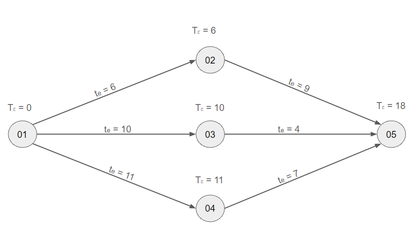
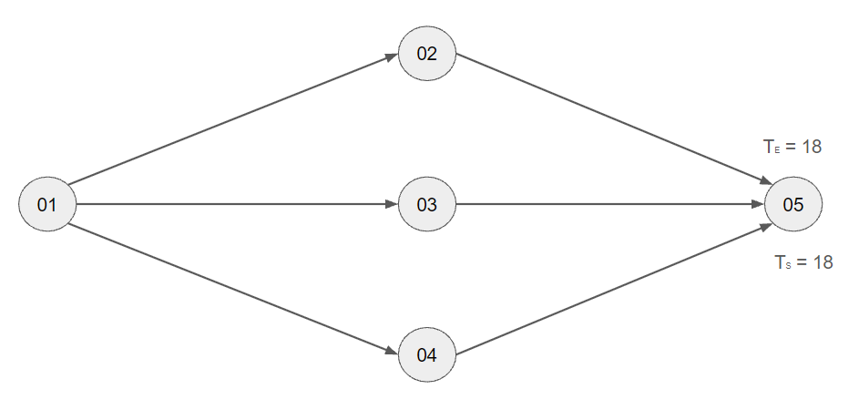

(TE)2 = 13 (TE)5 = 22 (TE)8 = 9 (TE)3 = 6 (TE)6 = 42 (TE)9 = 31 (TE)4 = 16 (TE)7 = 3
O passo seguinte para a conclusão de nossa rede PERT é o de determinar os últimos tempos permissíveis para cada evento. TL é o símbolo do último tempo permissível. Este por definição é o tempo máximo permissível em que um evento deve ter ocorrido para que o projeto seja concluído no tempo estabelecido.
Estes tempos foram pré-estabelecidos ou o são por uma obrigação contratual. Esta data de conclusão ou obrigação contratual é dada pelo símbolo TS.
Repare na seguinte rede:

Suponhamos que a administração decida que 18 semanas (tempo mais próximo possível TE) é um prazo aceitável e devia ser igual ao da data de conclusão. Este prazo é então o nosso TS e aparece logo abaixo do Evento 5 na nossa rede PERT.

O último tempo permissível para a conclusão do Evento 5 é de ________ semanas.
Passe para a página 81.